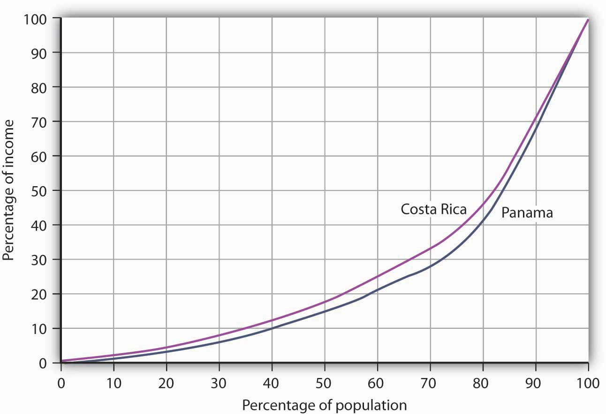

Throughout most of history, poverty has been the human condition. For most people life was, in the words of 17th-century English philosopher Thomas Hobbes, “solitary, poor, nasty, brutish, and short.” Only within the past 200 years have a handful or so of countries been able to break the chains of economic deprivation and poverty.
Consider these facts:United Nations Development Program, Human Development Report 2007/2008 (New York: Palgrave Macmillan, 2007).
Clearly, the high standards of living enjoyed by people in the world’s developed economies are the global exception, not the rule. This chapter looks at the problem of improving the standard of living in poor countries.
The World Bank, an international organization designed to support economic development by providing financial assistance, advice, and other resources to poor countries, classifies over 200 countries according to their levels of per capita gross national income. The categories in its 2008 report, as shown in Table 33.1 "World Incomes, Selected Countries", were as follows:
Countries in the low- and middle-income categories are often called developing countries. A developing countryA country that is not among the high-income nations of the world. is thus a country that is not among the high-income nations of the world.The World Development Report 2006 (New York: Oxford University Press, 2006), xiv, comments on this usage: “The term developing countries includes low- and middle-income economies and thus may include economies in transition from central planning, as a matter of convenience. The term advanced countries may be used as a matter of convenience to denote high-income economics.” Developing countries are sometimes referred to as third-world countries.
How does the World Bank compare incomes across countries? The World Bank converts gross national income (GNI) figures to dollars in two ways. One is to take GNI in a local currency and convert using the exchange rate, averaged over a three-year period in order to smooth out the effects of currency fluctuations. This type of comparison can, however, be misleading. A country could have a relatively high standard of living but, for a variety of reasons, a low exchange rate. The per capita GNI figure would be quite low; the country would appear to be poorer than it is.
A better approach to comparing incomes converts currencies to dollars on the basis of purchasing power. This measure is reported in what are called international dollars. An international dollar has the same purchasing power as does a U.S. dollar in the United States. This is reported in the column labeled “2007 International $” in Table 33.1 "World Incomes, Selected Countries".
Table 33.1 World Incomes, Selected Countries
| Gross National Income per Capita, 2007 | ||||||||
|---|---|---|---|---|---|---|---|---|
| Low-income countries | Middle-income countries | High-income countries | ||||||
| Countries | 2007 $ | 2007 International $ | Countries | 2007 $ | 2007 International $ | Countries | 2007 $ | 2007 International $ |
| Burundi | 110 | 330 | India | 950 | 2,740 | Czech Republic | 14,450 | 22,020 |
| Sierra Leone | 260 | 660 | China | 2,360 | 5,370 | Saudi Arabia | 15,440 | 22,910 |
| Mozambique | 320 | 690 | Thailand | 3,400 | 7,880 | Israel | 21,900 | 25,930 |
| Bangladesh | 470 | 1,340 | Iran | 3,470 | 10,800 | Greece | 29,630 | 32,330 |
| Haiti | 560 | 1,150 | Jamaica | 3,710 | 6,210 | Japan | 37,670 | 34,600 |
| Uzbekistan | 730 | 2,430 | Costa Rica | 5,560 | 10,700 | France | 38,500 | 33,600 |
| Vietnam | 790 | 2,550 | Brazil | 5,910 | 9,370 | Canada | 39,420 | 35,310 |
| Zambia | 800 | 1,220 | Argentina | 6,050 | 12,990 | United States | 46,040 | 45,850 |
| Pakistan | 870 | 2,570 | Russian Federation | 7,560 | 14,400 | Ireland | 48,140 | 37,090 |
| Nigeria | 930 | 1,770 | Turkey | 8,020 | 12,350 | Norway | 76,450 | 53,320 |
| Average | 578 | 1,494 | Average | 2,872 | 5,952 | Average | 37,566 | 36,100 |
| Ave., lower middle | 1,887 | 4,543 | ||||||
| Ave., upper middle | 6,987 | 11,868 | ||||||
Source: World Development Indicators database, World Bank, revised October 17, 2008.
The international dollar estimates typically show higher incomes than estimates based on an exchange rate conversion. For example, in 2007 Mozambique’s per capita GNI, based on exchange rates, was $320. Its per capita GNI based the international dollars was $690.
Ranking of countries, both rich and poor, by per capita GNI differs depending on the measure used. According to the per capita GNI figures in Table 33.1 "World Incomes, Selected Countries", which convert data in domestic currencies to dollars using exchange rates, the United States ranked fifteenth of all countries in 2007. Using the international dollars method, its rank is tenth. China is ranked at 132 when per capita GNI is based on the exchange rate conversion method but rises to 122 based on the international dollar method.
Low incomes are often associated with other characteristics: severe inequality, poor health care and education, high unemployment, heavy reliance on agriculture, and rapid population growth. We will examine most of these problems in this section. Population growth in low-income nations is examined later in the chapter.
Not only are incomes in low-income countries quite low; income distribution is often highly unequal. Poverty is far more prevalent than per capita numbers suggest, as illustrated by Lorenz curves, introduced in the chapter on inequality, that show the cumulative shares of income received by individuals or groups.
Consider Costa Rica and Panama, two Latin American countries with roughly equivalent levels of per capita GNI (Costa Rica’s was $5,560 and Panama’s $5,510 in 2007). Panama’s income distribution is comparatively less equal, while Costa Rica’s is far more equal. Figure 33.1 "Poverty and the Distribution of Income: Costa Rica versus Panama" compares the 2003 Lorenz curves for Costa Rica and Panama, the most recent year for which the information was available. The 20% of the households with the lowest incomes in Costa Rica had twice as large a share of their country’s total income as did the bottom 20% of households in Panama. That means Costa Rica’s poor were about twice as well off, in material terms, as Panama’s poor.
Figure 33.1 Poverty and the Distribution of Income: Costa Rica versus Panama
Costa Rica had about the same per capita GNI as Panama in 2003, but Panama’s income distribution was far more unequal. Panama’s poor had much lower living standards than Costa Rica’s poor, as suggested by the Lorenz curves for the two nations.
Source: World Development Indicators Online (revised October 17, 2008).
In general, the greater the degree of inequality, the more desperate is the condition of people at the bottom of an income distribution. Given the high degree of inequality in many low-income countries, it is very important to look at income distributions when we compare living standards in different countries.
Poor nations are typically characterized by low levels of human capital. Where health-care facilities are inadequate, that human capital can be reduced further by disease. Where educational resources are poor, there will be little progress in improving human capital.
One indicator of poor health care appears on the supply side. Low-income countries have fewer doctors, relative to their populations, than high-income countries. For example, the UN estimates that in 2006 about 60% of mothers giving birth in developing countries had access to a skilled health-care provider (doctor, nurse, or midwife). While that is up from 47% in 1990, the lack of access to a health-care provider may explain much of the difference in maternal death rates between developed and developing countries: about nine maternal deaths per 100,000 live births in developed countries compared to about 450 per 100,000 in developing countries.United Nations, The Millennium Development Goals Report 2008, 27.
We can also see the results of poor health care in statistics on health. Among the world’s developing countries, the infant mortality rate, which reports deaths in the first year of life, was 57 per 1,000 live births in 2005. There were six infant deaths per 1,000 live births among the high-income countries that year.United Nations Development Program, Human Development Report 2007/2008 (New York: Palgrave Macmillan, 2007), 264.
Another health issue facing the world’s low-income countries is malnutrition. Malnutrition rates in all developing countries in the 2002 to 2004 period averaged 17%, 35% in the least developed countries.
Still another issue is the spread of HIV/AIDS. Here there is some progress. The number of people newly infected declined from 3 million in 2001 to 2.7 million in 2005. Antiretroviral treatments are also leading to a reduction in deaths from 2.2 million in 2005 to 2 million in 2007. Longer survival means that the number of people living with HIV (from just under 30 million in 2001 to about 33 million in 2007) is rising and most of the people living with HIV are in Sub-Saharan Africa.United Nations, The Millennium Development Goals Report 2008, 30.
Education in poor and middle-income nations is improving. In 1991, about 80% of children in developing countries were enrolled in primary schools. In 2005, about 85% were. The comparable numbers in developed countries are about 95%. Enrollment rates taper off for high school (about 53% in 2005 in developing countries compared to 91% in developed countries).United Nations Development Program, Human Development Report 2007/2008 (New York: Palgrave Macmillan, 2007), 272.
Unemployment is pervasive in low-income nations. These nations, already faced with low levels of potential output, are producing well below their potential. Unemployment rates in low-income countries vary widely, reaching as high as 15% or more in some countries. If we count discouraged workers, people who have given up looking for work but who would take it if it were available, and people who work less than full time, not by choice but because more work is unavailable, then unemployment in low-income countries soars—often to more than 30%.
Migration within low-income countries often contributes to unemployment in urban areas. Factors such as ethnic violence, poverty, and drought often force people to move from rural areas to cities, where unemployment rates are already high.
One of the dominant characteristics of poor nations is the concentration of employment in agriculture. Another is the very low productivity of that employment. Agriculture in low-income countries often employs a majority of the population but produces less than one-third of GDP.
One of the primary forces behind income growth in wealthy countries has been the shift of labor out of agriculture and into more productive sectors such as manufacturing. This shift is also occurring in low-income nations but has lagged far behind.
The solution to these problems lies in economic development, to which we turn next.
If the problems of low-income nations are pervasive, the development that helps to solve those problems must transform the very nature of their societies. The late Austrian economist Joseph Schumpeter described economic development as a revolutionary process. Whereas economic growth implies quantitative change in production processes that are already familiar to the society, economic development requires qualitative change in virtually every aspect of life.
Robert Heilbroner, an economist at the New School for Social Research in New York, has argued,
“Economic development is political and social change on a wrenching and tearing scale. … It is a process of institutional birth and institutional death. It is a time when power shifts, often violently and abruptly, a time when old regimes go under and new ones rise in their places. And these are not just the unpleasant side effects of development. They are part and parcel of the process, the very driving force of change itself.”Robert Heilbroner, Between Capitalism and Socialism (New York: Vintage Books, 1970), 53–54.
Economic development transforms a nation at its core. But what, precisely, is development? Many definitions follow Heilbroner in noting the massive institutional and cultural changes economic development involves. But whatever the requirements of development, its primary characteristics are rising incomes and improving standards of living. That means output must increase—and it must increase relative to population growth. And because inequality is so serious a problem in low-income nations, development must deliver widespread improvement in living conditions. It therefore seems useful to define economic developmentA process that produces sustained and widely shared gains in per capita real GDP. as a process that produces sustained and widely shared gains in per capita real GDP.
In recent years, the United Nations has constructed measures incorporating dimensions of economic development that go beyond the level of per capita GDP. The Human Development Index (HDI) includes three dimensions—life expectancy, educational attainment (adult literacy and combined primary, secondary, and post-secondary enrollment), as well as purchasing-power-adjusted per capita real GDP. The Gender Development Index (GDI) uses the same variables as the HDI but adjusts them downward to take into account the extent of gender inequality. A third index, the Human Poverty Index (HPI), measures human deprivation and includes such indicators as the percentage of people expected to die before age 40, the percentage of underweight children under age 5, the percentage of adults who are illiterate, and the percentage of people who live in poverty. The number reported for the HPI shows the percentage of people in the country who suffer these deprivations.
Table 33.2 "Human Development Index, Gender Development Index, and Human Poverty Index" shows the HDI, the GDI rank, and the HPI for selected countries, by HDI rank. The HDI is constructed to have an upper limit of 1. Canada’s HDI is 0.96; the United States’ is 0.95. As the table shows, the HDIs for developing countries range from 0.87 in Argentina to 0.34 in Sierra Leone. The greater the difference between the HDI and the GDI of a country, the greater the disparity in achievement between males and females in the country. Countries can have similar HDIs but different GDIs or HPIs. By looking at a variety of measures, we come closer to examining the extent to which the gains in income growth have been shared or not.
Table 33.2 Human Development Index, Gender Development Index, and Human Poverty Index
| HDI rank | Country | Human Development Index (HDI), 2005 | Gender-Related Development Index (GDI) 2005, Rank | Human Poverty Index (HPI), % 2005The definition of deprivation for developed countries applies a higher standard than it does for developing countries. |
|---|---|---|---|---|
| 1 | Iceland | 0.968 | 1 | NA |
| 2 | Norway | 0.968 | 3 | 6.8 |
| 4 | Canada | 0.961 | 4 | 10.9 |
| 10 | France | 0.952 | 7 | 11.2 |
| 12 | United States | 0.951 | 16 | 15.4 |
| 24 | Greece | 0.926 | 24 | NA |
| 32 | Czech Republic | 0.891 | 29 | NA |
| 38 | Argentina | 0.869 | 36 | 4.1 |
| 48 | Costa Rica | 0.846 | 47 | 4.4 |
| 61 | Saudi Arabia | 0.812 | 70 | NA |
| 67 | Russian Federation | 0.802 | 59 | NA |
| 70 | Brazil | 0.8 | 60 | 9.7 |
| 78 | Thailand | 0.781 | 71 | 10.0 |
| 81 | China | 0.777 | 73 | 11.7 |
| 84 | Turkey | 0.775 | 79 | 9.2 |
| 90 | Philippines | 0.771 | 77 | 15.3 |
| 94 | Iran | 0.759 | 84 | 12.9 |
| 101 | Jamaica | 0.736 | 90 | 14.3 |
| 105 | Viet Nam | 0.733 | 91 | 15.2 |
| 114 | Mongolia | 0.7 | 100 | NA |
| 117 | Bolivia | 0.695 | 103 | 13.6 |
| 126 | Morocco | 0.646 | 112 | 33.4 |
| 128 | India | 0.619 | 113 | 31.3 |
| 135 | Ghana | 0.553 | 117 | 32.3 |
| 136 | Pakistan | 0.551 | 125 | 36.2 |
| 148 | Kenya | 0.521 | 127 | 30.8 |
| 154 | Uganda | 0.505 | 132 | 34.7 |
| 156 | Senegal | 0.499 | 135 | 42.9 |
| 173 | Mali | 0.38 | 151 | 56.4 |
| 177 | Sierra Leone | 0.336 | 157 | 51.7 |
Source: United Nations Development Program, Human Development Report 2007/2008 (New York: Palgrave Macmillan, 2007).
Provided below is information about two low-income developing countries in Western Africa, Côte d’Ivoire, and Guinea. Use the information to plot their Lorenz curves for consumption, which are similar to Lorenz curves for income distribution, discussed in the chapter on inequality, poverty, and discrimination. Then, based on the material in this section, contrast the concept of economic growth, as discussed in the chapter on that topic, with the concept of economic development, the subject of this chapter. Which of the two countries do you believe fits better the definition of development? Explain.
| Average annual growth rate of GNP (%) | Average annual growth rate of GNP per capita | Percentage Share of Consumption | |||||
|---|---|---|---|---|---|---|---|
| Lowest 20% | Second 20% | Third 20% | Fourth 20% | Highest 20% | |||
| Cote d’Ivoire | 6.9 | 4.2 | 6.8 | 11.2 | 15.8 | 22.2 | 44.1 |
| Guinea | 7.2 | 4.6 | 3.0 | 8.3 | 14.6 | 23.9 | 50.2 |
The 1971 Nobel laureate in economics, Simon Kuznets, hypothesized that, at low levels of per capita income, increases in income would lead to increases in income inequality. The Kuznets hypothesis was later extended to include concern that early growth might not be associated with improvements in other aspects of development, such as those measured by the HDI or HPI. The rationale for growth pessimism was that the structural changes that often accompany early growth—such as rural–urban migration, occupational changes, and environmental degradation—disproportionately hurt poorer people.
The passage of time and the availability of more information on developing countries’ experiences allow us to test whether such pessimism is warranted. The results of a recent study of 95 decade-long episodes of economic growth and decline around the world show that the distribution of income can go either way. Clearly, as the table below shows, with the direction of change in the distribution of income split almost 50-50 during periods of growth, there is no longer any reason to think that growth necessarily increases income inequality. As the table also shows, by a ratio of 7 to 1, the income of the poor usually improves during periods of growth. This means that even when inequality increases, the poor usually gain in absolute terms as income grows.
There were only seven periods of income decline included in the study, but, in general, during those periods the distribution of income grew more unequal and the incomes of the poor fell.
Broad-based measures of development, such as the HDI and the HPI, have not been calculated for a long enough period to allow us to see the trend in these social indicators of development, but we can look at various aspects of human development and poverty over time. As shown in the graphs accompanying this case, there have generally been improvements in the percentage of people with access to safe water, in the adult literacy rate, and in the percentage of underweight children under age 5. On this last indicator, the improvement in Sub-Saharan Africa is very small, but keep in mind that the rate of growth of real GNP per capita in this region has been just over 1% per year.
There is no guarantee that economic growth will improve the plight of the world’s poor—there is indeed wide variation in individual countries’ experiences. In general, though, economic growth makes most people, including most poor people, better off. As former World Bank Senior Vice President and Chief Economist Joseph Stiglitz put it, “Aggregate economic growth benefits most of the people most of the time; and it is usually associated with progress in other, social dimensions of development.”
| Periods of growth (88) | Periods of decline (7) | |||
|---|---|---|---|---|
| Indicator | Improved | Worsened | Improved | Worsened |
| Inequality | 45 | 43 | 2 | 5 |
| Income of the poor | 77 | 11 | 2 | 5 |

Source: World Development Indicators database, World Bank, revised October 17, 2006.
Sources: United Nations, Human Development Report, 1997 (New York: Oxford University Press, 1997), 72, 224; Human Development Report, 1998 (New York: Oxford University Press, 1998), 206; Joseph Stiglitz, “International Development: Is It Possible?” Foreign Policy 110 (Spring 1998): 138–51.
Economic growth refers to the process of increasing a country’s potential output. Graphically, this can be represented by rightward shifts in the long-run aggregate supply curve or by the shifting outward of the production possibilities curve. The challenge of economic development, however, is for countries to move toward their level of potential output and to achieve widely shared gains in GDP per capita. This process usually involves widespread structural changes in the way people live—their standards of living, the kinds of jobs they have, their health, and so forth. When comparing Côte d’Ivoire and Guinea, for example, it is clear that the distribution of consumption is much more equal in the former. This implies that Côte d’Ivoire is coming closer to generating widely shared gains in per capita real GDP.